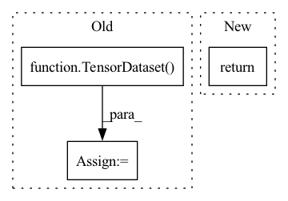

Pattern ID :25247
Before Change
new_tensors.append(input_data_x.tensors[i][non_zeros])
new_x = TensorDataset(*new_tensors)
new_y = TensorDataset( torch.from_numpy(y_arr[non_zeros]))
return new_x, new_y
After Change
new_x = TensorDataset(*new_tensors)
return new_x, class_probas_y[non_zeros]
In pattern: SUPERPATTERN
Frequency: 3
Non-data size: 3
Instances Fragment ID: 77146555
Project Name: knodle/knodle
Commit Name: 384f51be7e05612070fb1744f4161cd1613e121e
Time: 2021-01-26
Author: andreas.stephan@univie.ac.at
File Name: knodle/trainer/utils/filter.py
M Class Name: AnonimousClass
N Class Name: AnonimousClass
M Method Name: filter_empty_probabilities(2)
N Method Name: filter_empty_probabilities(2)
M Parent Class:
N Parent Class:
M File Name: knodle/trainer/utils/filter.py
N File Name: knodle/trainer/utils/filter.py
M Start Line: 13
M End Line: 28
N Start Line: 24
N End Line: 26
Before Change
validation_labels = torch.tensor(valid_label)
// Create the DataLoader for our validation set.
validation_data = TensorDataset( validation_inputs, validation_type_ids,\
validation_masks, validation_labels)
validation_sampler = SequentialSampler(validation_data)
validation_dataloader = DataLoader(validation_data, \
sampler=validation_sampler, \
batch_size=self.batch_size)After Change
sampler = SequentialSampler(data)
dataloader = DataLoader(data, sampler=sampler, batch_size=self.batch_size)
return dataloader
def get_accuracy(self, preds, labels):
Compute the accuracy of binary predictions. Fragment ID: 77146557
Project Name: yuanbit/finbert-qa
Commit Name: a4844511b0075db8aaf855486bb22046ba74669c
Time: 2020-04-11
Author: bithiahy@gmail.com
File Name: src/finbert_qa.py
M Class Name: PointwiseBERT
N Class Name: PointwiseBERT
M Method Name: get_dataloader(3)
N Method Name: get_dataloader(1)
M Parent Class:
N Parent Class:
M File Name: src/finbert_qa.py
N File Name: src/finbert_qa.py
M Start Line: 176
M End Line: 224
N Start Line: 150
N End Line: 182
Before Change
all_label_ids = torch.tensor([f.label_id for f in features], dtype=torch.long)
elif output_mode == "regression":
all_label_ids = torch.tensor([f.label_id for f in features], dtype=torch.float)
dataset = TensorDataset( all_input_ids, all_input_mask, all_segment_ids, all_label_ids)
return dataset
def divide_parameters(named_parameters,lr=None):After Change
dataset = TensorDataset(all_input_ids, all_attention_mask, all_token_type_ids, all_label_ids)
return dataset
else:
return all_input_ids, all_attention_mask, all_token_type_ids, all_label_ids
def divide_parameters(named_parameters,lr=None): Fragment ID: 77146558
Project Name: airaria/textbrewer
Commit Name: d6e8515e877c182cd1d9255672ac13910eb99b40
Time: 2021-02-28
Author: yangziqing@163.com
File Name: examples/mnli_example/utils.py
M Class Name: AnonimousClass
N Class Name: AnonimousClass
M Method Name: load_and_cache_examples(6)
N Method Name: load_and_cache_examples(5)
M Parent Class:
N Parent Class:
M File Name: examples/mnli_example/utils.py
N File Name: examples/mnli_example/utils.py
M Start Line: 34
M End Line: 67
N Start Line: 10
N End Line: 60